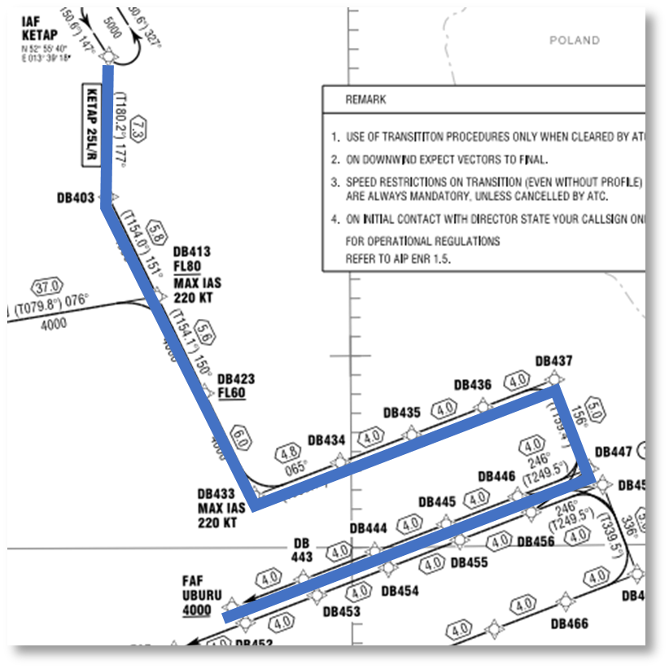
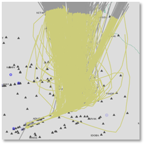
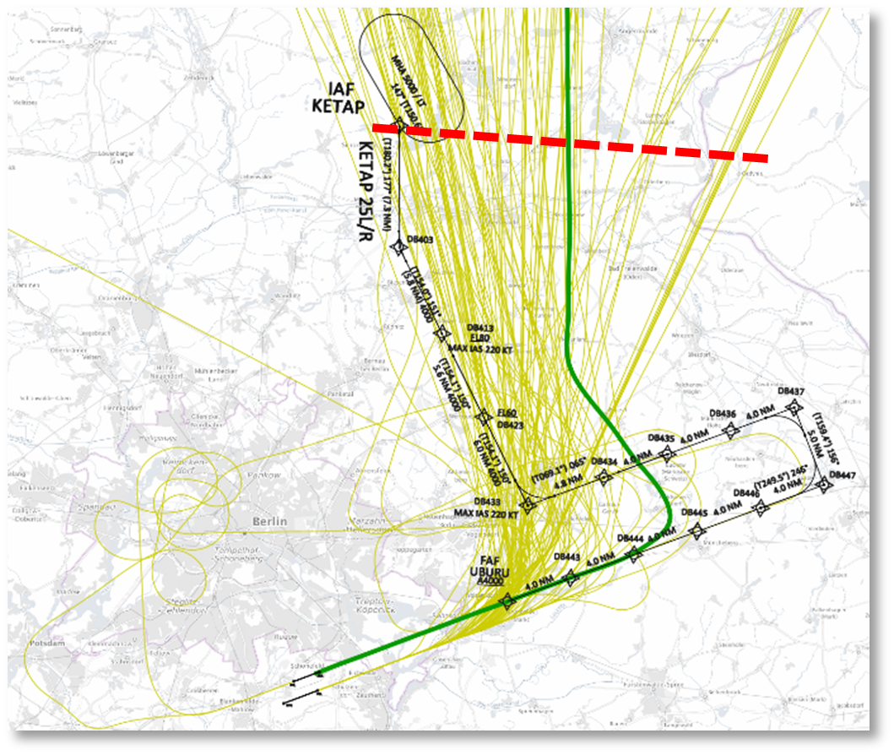
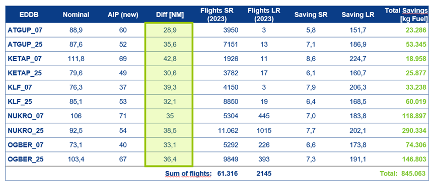
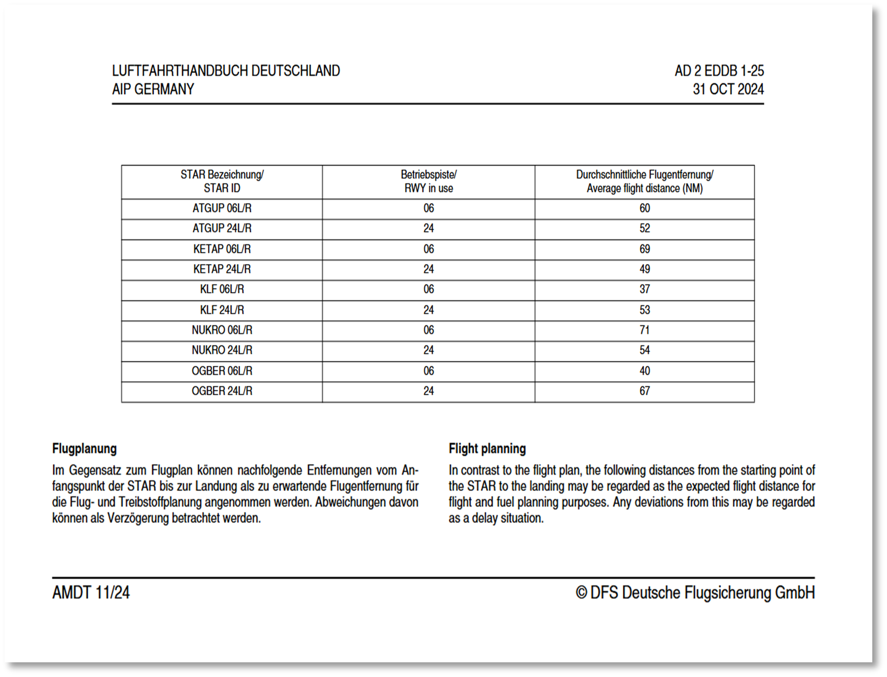

Overview
This work is the result of a close collaboration of Lufthansa and DFS. First steps were implemented at Frankfurt Airport (EDDF), Munich Airport (EDDM) and Düsseldorf Airport (EDDL) in 2020. Further steps (between NOV 2022 and OCT 2025) within the Digital Sky Demonstrator project HERON address Berlin Brandeburg Airport (EDDB), Nuremberg Airport (EDDN), Hamburg Airport (EDDH) and Stuttgart Airport (EDDS).
The start point of the project is the observation that PBN standard arrival routes are often designed with a long downwind leg to allow for safe and fluent traffic flows in case of peak traffic resulting in delays as shown below with the STAR (in blue below).
However, the actual traffic is usually not peak traffic, allowing air traffic controllers to provide shorter tracks and reduce the actual flown distance as shown with the visualisation of the radar tracks in yellow.
 |
 |
Figure 27 - Published STAR for EDDB (left) versus flown tracks (right)
The idea of the project is to publish a shorter and more realistic distance estimate in the AIP which can be used in flight planning (hence having an impact on the planned fuel). Once published in the AIP, the reduced planning distances can be used by all airspace users as part of their planning process. The routing in the AIP does not change.
The solution was to derive the new planning distance from a post flight analysis using the following methodology (colours refer to Figure 28 below):
- Collect the distribution of actual flown arrival distances for the respective airports (yellow tracks).
- Define a line as the balance boundary line that cuts off as many flight tracks as possible in a meaningful way, in accordance with the STAR (red line).
- Measure ground distance from this line to landing.
- Select the 90th percentile of these distances for safety reasons (green line).
- Compare the distance with the nominal transitions published in the AIP (black line) for the benefit assessment.
- Ensure that the alignment of intersection line of the STAR (red line) does not exceed the flight plan segment before the STAR (starting at the IAF).
- Publish the 90th percentile as an expected flight distance with an AIP amendment.
- Monitor the actual arrival distances once or twice a year after the implementation / publication.
- Update the amendment of AIP for any deviations above 5 NM from published one before.
|
 |
· Yellow: Radar tracks for KETAP arrivals EDDB RWY 24 L/R. · Black: KETAP STAR in accordance with AIP-Germany. · Red: STAR entry line. · Green: 90th percentile of KETAP arrivals.
Figure 28 - Methodology example for KETAP STAR (EDDB) |
Potential fuel savings are not attributed to fewer track miles being flown before or after the information was published in AIP. In actual operations, there were no changes. The savings are due to a reduction in the planned distance. This decrease in planned distance leads to a reduced fuel uptake, which in turn results in a lower aircraft weight throughout the entire flight. The lower aircraft weight consequently causes a lower fuel consumption during the whole flight.
Potential Fuel Saving per flight were calculated for all flights in 2023 on all STARs to EDDB using the 90th percentile. This was done by multiplying the Distance Saved by the Fuel Flow (for short- and long-range flights) and Cost of Weight. The Cost of Weight is calculated using the rule of thumb of 5kg fuel/NM for short range flights and 15 kg fuel/NM for long range flights.
The potential savings amount to 845,063 kg of fuel (i.e., 2,662 tonnes of CO2) if all aircraft adopt the new distance as shown in the table below.

Figure 29 - Table of potential savings for EDDB
Dissemination and implementation aspects to ensure that AOCCs and CFSPs are aware were addressed as follows:
- Preparation of the values:
- The 90th percentile values are transferred in a tabular description for the AIM department.
- Notification of the publication:
- The AIM department is informed on an update or new data set for respective aerodrome in chapter EDXX AD 2.22 of AD 2 section. Publication is done with the next AIRAC.
- Dissemination:
- Information campaign was launched towards the airlines.
- Flight planning departments need to use the information:
- Either manually coding as “modified” STAR length for fuel calculation,
- Or via NM B2B services (ENV coordinator will provide NM with the update procedure length for coding in CACD).
- Monitoring:
- All flights of selected airports must be re-analysed once or twice a year. STAR distances with changes of more than 5 NM have to be updated in the AIP.
An example of the results for EDDB can be found below:

Figure 30 - Extract from AIP-Germany
A proposed way forward to allow for a harmonised expansion of the procedure at European level was addressed. The prerequisites for this would be:
- Standardised evaluation method to apply same distance principles at every airport (if meaningful).
- Data source with all relevant flight tracks (all airlines).
- Assessment of applicability – would there be regional showstoppers? What would be the exit criteria?
To make this possible, some open items must be addressed:
- Responsibility for analysis of distances and monitoring – Who?
- Consultation of ANSPs – What is required to publish?
- Consultation of flight planning providers – What is required to use it?
- Consultation of airlines – What is required to use it?